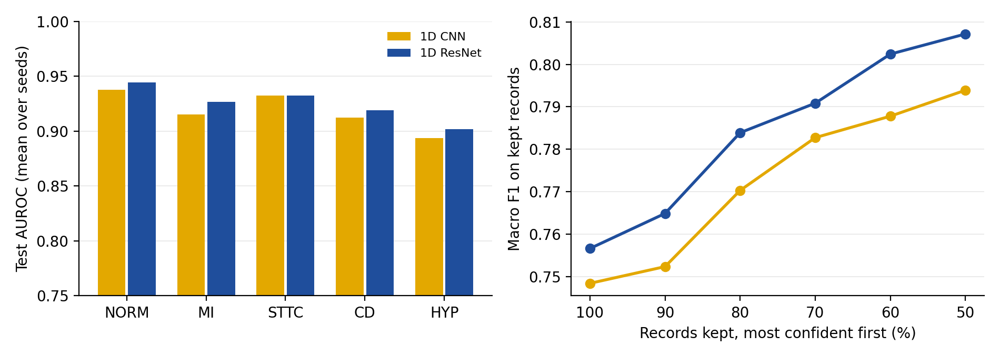

Experiment · Neural networks · Healthcare AI · ECG
A 195,000-parameter network reads five heart conditions from an ECG as well as models twice its size
PTB-XL: does a residual network really beat a plain one once you count the random seed, and can the model say when it is unsure?
By Muzammal Hussain · 20 November 2026 · Research update
A 12-lead ECG is ten seconds of the heart's electrical activity, recorded from twelve angles. PTB-XL is the largest open set of clinical ECGs with cardiologists' labels, and it groups them into five classes: normal, myocardial infarction (MI), ST/T change, conduction disturbance (CD) and hypertrophy (HYP). One ECG can carry several. Many new results on this task come from a single training run, without an interval, so a gain of half a point may be nothing more than luck.
Key findings
- The residual network is better, by a small but steady margin. Over five seeds it reached macro AUROC 0.925 ± 0.003 against 0.918 ± 0.002 for a plain CNN. Paired on the same test patients, the gap is +0.009 [+0.007, +0.011] and it was ahead in four of five seeds.
- One run could have pointed the other way. Single-seed scores overlap (0.920 to 0.928 against 0.916 to 0.921), and on seed 59 the plain CNN won.
- Small is enough. With 195,000 parameters the residual network matches the 0.925 reported for the widely used resnet1d_wang baseline, which has 451,000.
- Hypertrophy is the hard class. Its average precision is about 0.67, against 0.82 to 0.92 for the other four.
- The model knows some of its mistakes. Keeping only its most confident 80% of ECGs raises macro F1 from 0.757 to 0.784; the most confident half reaches 0.807.
Setup
The data are PTB-XL 1.0.3 at 100 Hz: 21,388 ECGs with at least one of the five classes. The dataset's own patient-disjoint folds give 17,084 ECGs for training, 2,146 for validation and 2,158 for testing; no patient appears in two of them. Both networks are 1D convolutional models of the same width (32, 64 and 128 channels). The plain CNN has 76,000 parameters; the ResNet adds shortcut connections and has 195,000. Each was trained five times with different seeds on a Kaggle GPU, about one minute per run.
Everything that could leak the test set was fixed on the validation fold: the normalisation statistics, early stopping and the per-class decision thresholds. Intervals come from resampling test patients 1,000 times, with all of a patient's ECGs moving together, because ECGs from the same person are not independent.

Results
| Model | Parameters | Macro AUROC, 5 seeds | Ensemble AUROC [95% CI] | Macro F1 at 100 / 80 / 50% kept |
|---|---|---|---|---|
| 1D CNN | 76k | 0.918 ± 0.002 | 0.923 [0.915, 0.930] | 0.748 / 0.770 / 0.794 |
| 1D ResNet | 195k | 0.925 ± 0.003 | 0.932 [0.924, 0.939] | 0.757 / 0.784 / 0.807 |
Per class, the ResNet's gain sits mainly in myocardial infarction (AUROC 0.927 against 0.915) and conduction disturbance (0.919 against 0.912); on ST/T change the two are equal at 0.933.
What this means
For anyone comparing ECG models: report several seeds and a patient-level interval, or a half-point gain cannot be told apart from luck. For anyone building a tool: a model this small runs on a laptop or in a browser, and a confidence cut-off gives a simple way to send the unclear ECGs to a clinician. The gain from doing so is real but modest, about 0.05 macro F1 at half coverage; low confidence catches some errors, not most of them.
Limitations
All results come from one dataset and one test fold, recorded at one centre, so they say nothing yet about other hospitals or devices. The ResNet also has more parameters than the plain CNN, so the comparison does not separate the effect of the shortcuts from that of size. The confidence score is a heuristic, not a calibrated error probability. This is research software, not a diagnostic device.
Data: Wagner, Strodthoff, Bousseljot, Kreiseler, Lunze, Samek and Schaeffter (2020), PTB-XL, a large publicly available electrocardiography dataset, Scientific Data 7, 154. Baseline: Strodthoff, Wagner, Schaeffter and Samek (2021), Deep learning for ECG analysis: benchmarks and insights from PTB-XL, IEEE Journal of Biomedical and Health Informatics 25(5).